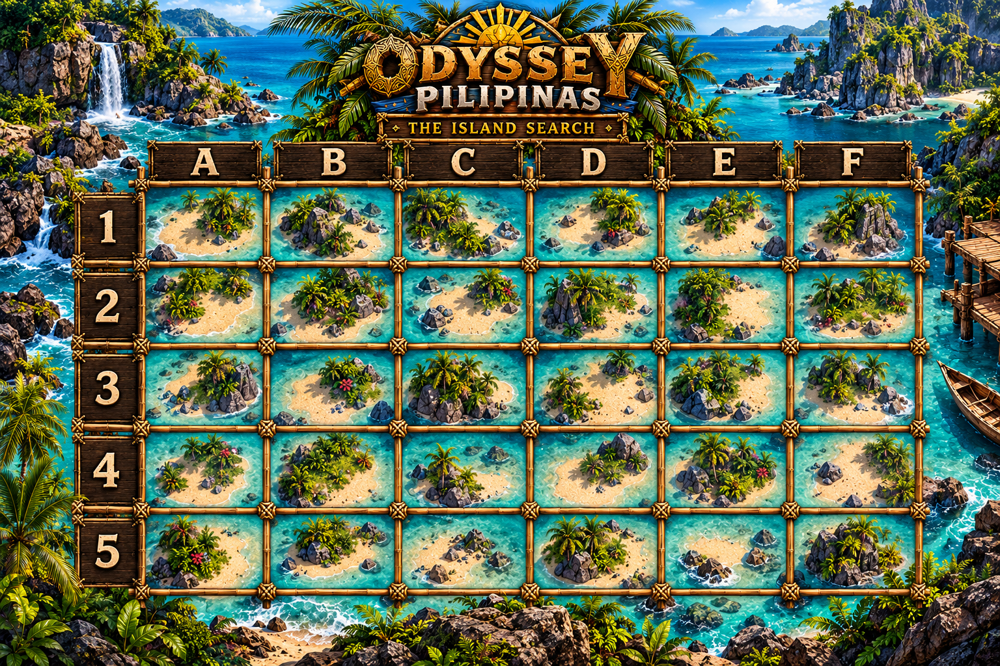

SURVIVOR ODYSSEY PILIPINAS
The Island Search
Select a coordinate to mark it searched. Contents remain hidden.
0 / 30Squares searched

✕ Dug-up square • Click a square again to remove its mark
Select a coordinate to mark it searched. Contents remain hidden.
